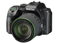
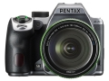
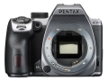
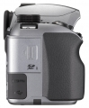
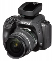

器材库 > APS及其以下画幅可换镜头数码相机 > K-70

规格总览
产品类型
APS画幅可换镜头数码相机
发布日期
2016-06-09
影像规格
影像传感器
CMOS
影像传感器尺寸
23.5×15.6mm
总像素
2478万
有效像素
2424万
影像处理器
PRIME MII
低通滤镜
无光学低通滤光镜
色彩空间
sRGB、AdobeRGB
静态图像格式
RAW（PEF／DNG）, JPEG（Exif 2.30）兼容, DCF 2.0 兼容
静态图像尺寸
JPEG：L(24M：6000x4000)、M(14M:4608x3072)、S(6M:3072x2048)、XS(2M:1920x1280)RAW： (24M:6000x4000)
短片格式
MPEG4-AVC/H.264
短片尺寸
Full HD (1920x1080、60i/50i/30p/25p/24p)、 HD (1280x720、60p/50p)
防抖系统
具备像素偏移分辨率系统的自主研发的防抖机构“SR”
除尘系统
DR（Dust Removal）
镜头和对焦
对焦系统类型
TTL相位匹配11点宽区自动对焦系统（SAFOX X）
对焦点
11个对焦点，中央的9点为十字自动对焦点，支持-3EV低照度自动对焦
AF辅助灯/光
有
曝光控制
测光系统
TTL 77分区测光
测光模式
中央重点测光, 点测光, 矩阵测光
测光范围
0EV~22EV
快门速度
自动：1/6000秒～30秒、手动：1/6000秒～30秒、B门（10秒 ~ 20分钟）
闪光同步速度
1/180秒
曝光补偿
±5EV以1/3或1/2EV级调整
ISO感光度
ISO AUTO / 100～102400（可以1EV、1/2EV或1/3EV调整）
白平衡
自动/日光/阴影/阴天/荧光灯（D、N、W、L）/白炽灯/CTE/手册/色温设定/摄影图像设定
连拍
最高约 6 fps
闪光灯
内置闪光灯
弹出式
闪光指数
约12（ISO 100·m）
闪光补偿
-2 至 +1EV
取景器/显示屏
取景器
五棱镜取景器
取景范围
100%
取景放大倍率
約0.95倍
屈光度调节范围
约-2.5～+1.5m-1
对焦屏
自然光亮磨砂对焦屏III、可更换
LCD类型
彩色TFT LCD
LCD尺寸
3.0英寸
LCD像素
约92.1万
LCD特性
翻转屏
文件输入/输出
存储卡
SD/SDHC, SDXC
数据接口
USB2.0
视频/音频接口
HDMI 输出
无线功能
Wi-Fi
电源
电池
可充电锂离子电池 D-LI109
续航能力
可拍摄静止图像：约410张（50%闪光）/ 约480张（无闪光）
机身规格
颜色
银色, 黑色
尺寸
125.5×93.0×74.0mm
重量
仅机身约628g / 含电池和存储卡约688g
其它
工作温度
-10 ~ 40℃
工作湿度
不高于85%
该产品暂无存档的网友点评
产品图 / 样片
K-70

K-70

K-70

K-70

K-70
评测 / 相关文章
- 详细内容 （存档）
- 不倒小金刚 宾得K-70评测 （存档）
- ［资讯］JPG直出哪家强 八家相机画质大比拼 （存档）
- ［试用］不倒小金刚 宾得K-70实拍样张 （存档）
- ［资讯］刚上市就升级 宾得发布K-70最新升级固件 （存档）
- ［资讯］将门之后 宾得K-70外观图赏 （存档）
- ［行情］宾得K-70将在7月底上市销售 （存档）
- ［资讯］宾得K-70数码单反相机官方样片欣赏 （存档）